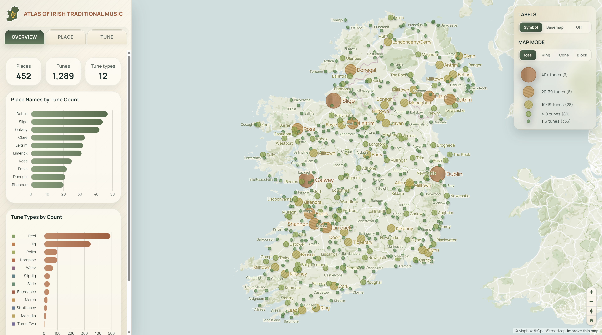
Explore the Interactive Map
Over the past roughly three years, I have been playing the tin whistle in local Irish music sessions (depending on where I was living at the time), and I could not help noticing how many traditional tunes are connected to Irish places. Since I am not an expert in either Irish music history or Irish place names, I had never tried to organize them in a systematic way. By chance, I came across Benjamin Becquet's Irish Tune Map, which linked tunes and places using data from The Session and OpenStreetMap. I immediately felt this was a wonderful idea, and he had also generously made the data public. With his permission, I expanded the project from a cartographic perspective and created this web map, Atlas of Irish Traditional Music.
In addition to a standard mode showing the overall distribution of tunes with proportional symbols, I also designed three visualization modes that highlight tune types in different ways. Most notably, when users explore tune details, they can preview the melodies with several instrument sounds commonly used in Irish traditional music, including accordion, bagpipe, banjo, dulcimer, fiddle, flute, harmonica, harp, violin, and whistle, although the quality varies quite a bit. Based on my recent experience developing web maps, I found that mobile access is always in high demand, so this map was built with mobile compatibility in mind from the very beginning.
As Benjamin kindly noted, the current data still have important limitations, since tune-place pairing relies on fairly simple name matching and can therefore produce false matches, especially when different places share the same name. If you, or your friends in the Irish music community, notice any problems, I would be very grateful for corrections and suggestions. I would be even more excited to collaborate more systematically with real experts in this field, such as musicians from Ireland or related scholars, so that this small public-interest project may become genuinely useful to Irish music lovers around the world, much like The Session has been. As an amateur Irish whistler, I sincerely appreciate any sharing or feedback!
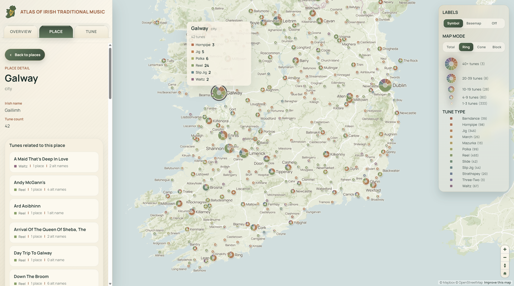
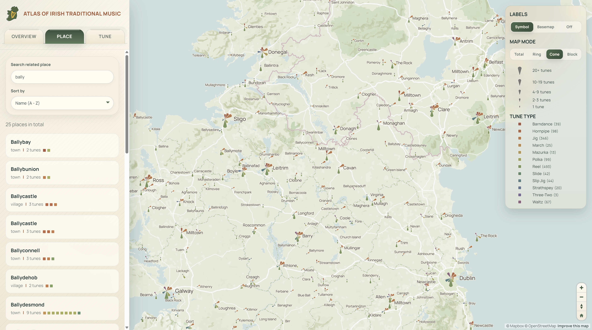
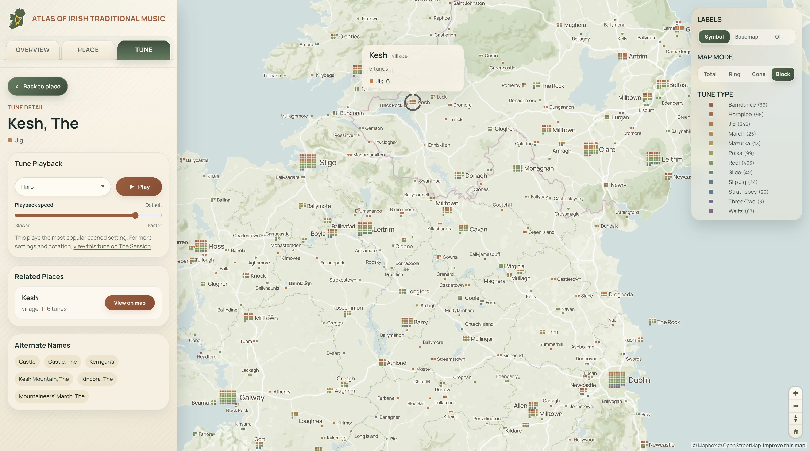
Below are some screenshots of the mobile version.
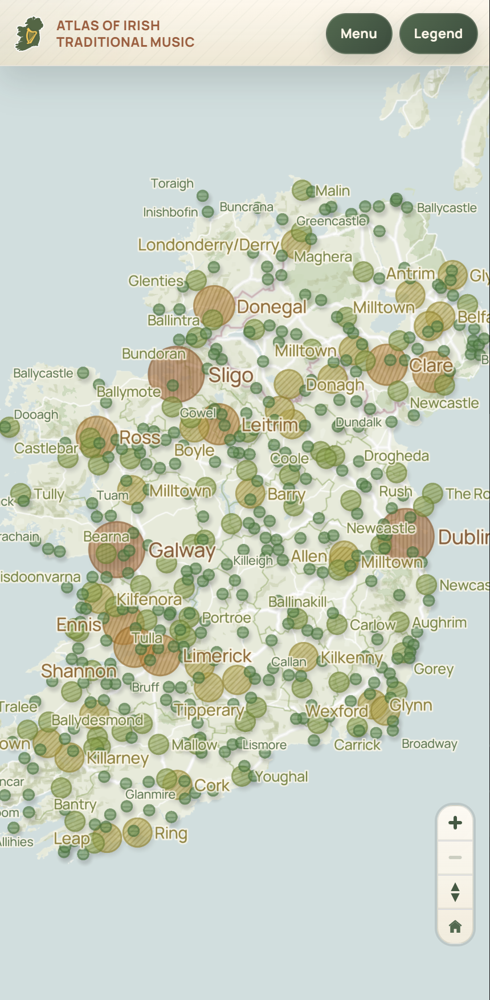
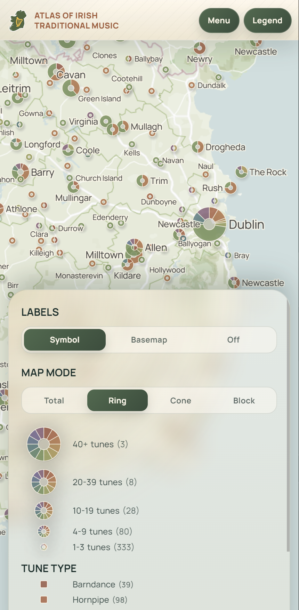
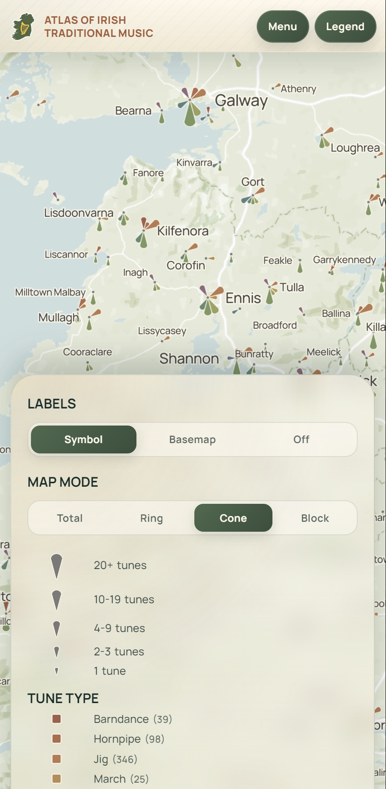
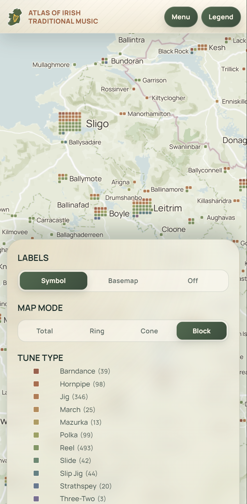
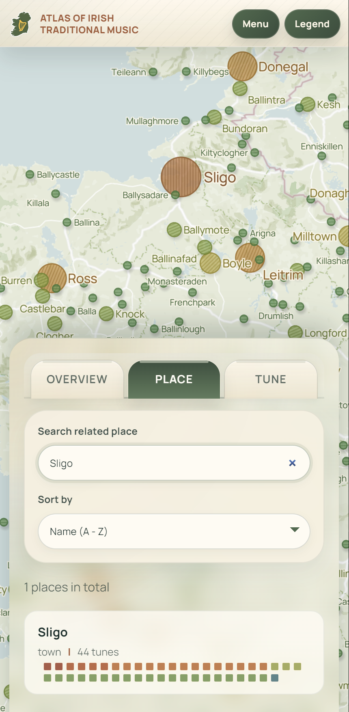
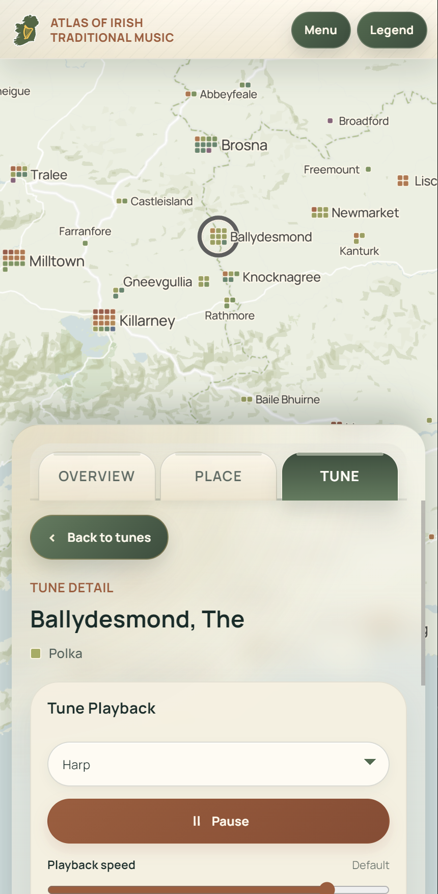
This project won the Honorable Mention award in 17th annual Digital Salon by UW-Madison, and is on display during Apr 2026 - Apr 2027 at the UW-Madison College Library.
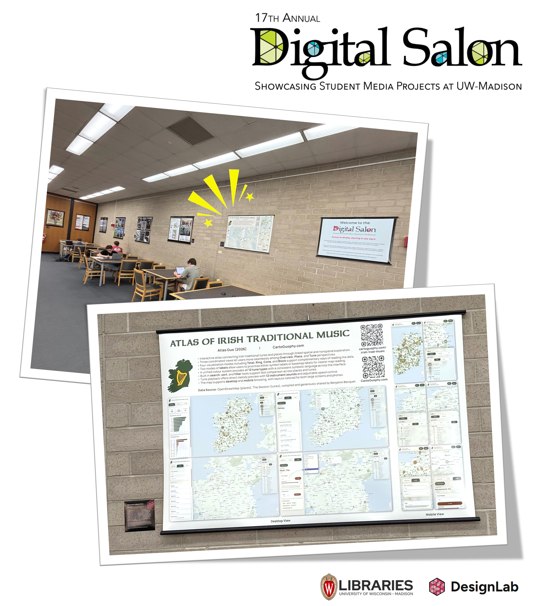
This map will be presented in the poster session of State of the Map US conference in June 2026 at Madison, WI.
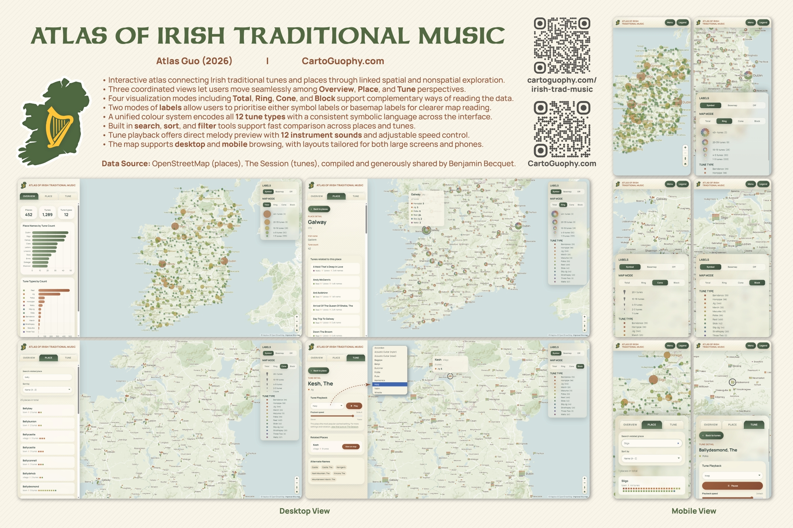
Download Compressed Image